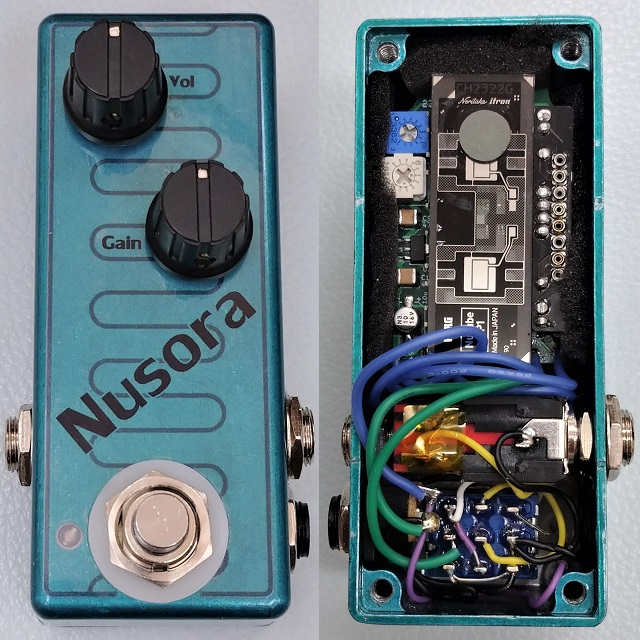
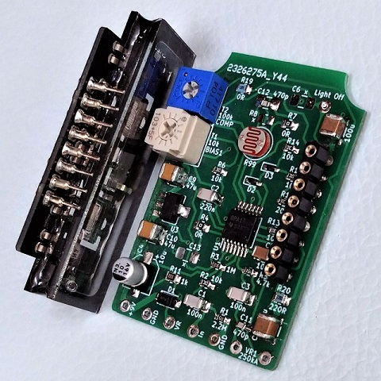
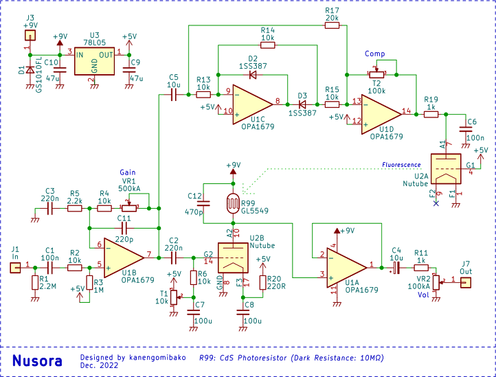
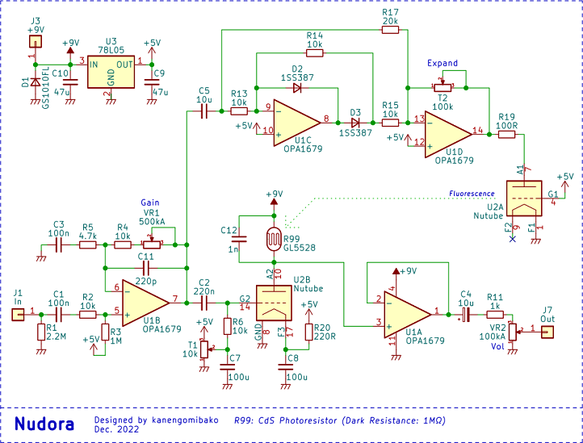
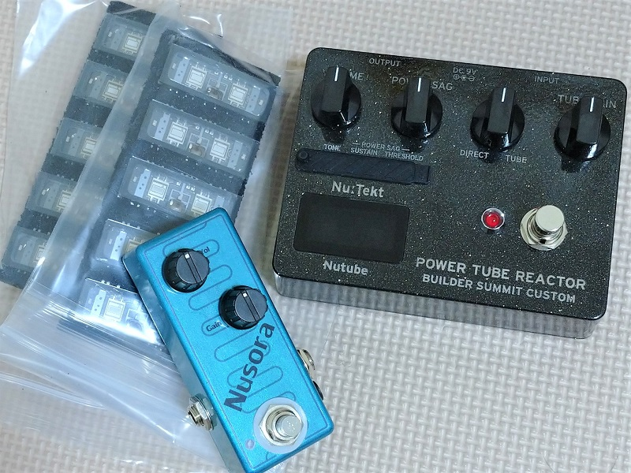

Nusora
2022年12月17日 カテゴリー：自作エフェクター（アナログ）

「Nutube自作エフェクターコンテスト」第3弾に向けて製作したオーバードライブで、読み方は「ニュソラ」です。第1回、第2回のコンテストで出ていないアイデアは何かよく考えた末、Nutubeの蛍光を利用したものにしました。ケースはNutubeの蛍光体の色とCdSセルの波線をイメージしています。
最初は光学式コンプレッサーを作ろうとしていましたが、圧縮が小さい上歪みが大きく失敗しました。Nutubeのアノード抵抗としてCdSセルを配置していたのが原因ですが、他の部分にCdSセルがあっても面白みがないかなと思い、敢えて配置はそのままで歪ませる方向へと転換しました。

今まで製作したNuverdriveやNuzzがHAMMOND1590Aサイズだったので、今回も同じサイズにしました。CdSセルをNutubeに密着させる必要があるため、表面実装部品を使った小型の基板となっています。Nutube部分でのゲインがあまり高くないためか、スイッチング時のマイクロフォニックノイズは少なかったです。
▽回路図

回路図上側は理想ダイオード回路を使った全波整流で、音量を検出します（サイドチェイン）。入力音量が大きい程Nutubeのアノード電圧が高くなり、蛍光が強くなります。そして、CdSセルの抵抗値が低下しゲインが下がります。Nutubeのアノード抵抗の値が変わると、動作点が変わりやや歪みが増えるようです。また、CdSセルに並列にコンデンサを入れているため、高音域も変化するということになります。
トリマーT2はコンプレッサー動作の強さを調節します。コンテスト応募時は最大（100kΩ）にしましたが、Gainポットの影響を受けてしまうので、コンプレッサーの効果はわかりにくいかもしれません。出音はやはりNuverdriveに似ており、そこまで奇抜な音という感じではないかなと思います。ただスタンダードな音の方が評価が高くなる可能性もあり、加減が難しいところですね。
まだまだ回路に検討の余地はあるのですが、今回は時間が足りず……。サイドチェイン部分自体を別経路にし、Compポットを設けるというのも試したかったです。また、Nutubeの片方を蛍光用のみに使うのは贅沢すぎるので、増幅動作させつつ蛍光を利用できればよかったのですが、蛍光の変化が大きくなる最適な条件が見つからず断念しました。外部からの光の影響を受けないようにCdSセルとNutubeを遮光した状態で調整しなければならないので、完璧なものを目指すには専用の開発モジュールが必要になりそうです。
▽不採用案 Nudora

Bixonic Expandoraのように、コンプレッサーとは逆のエクスパンダーの動作をするものも試していました。ダイオードの向きが逆になり、音量が大きい程Nutubeのアノード電圧が低くなります。歪みとしてはなかなか面白いと感じたのですが、いかんせん強く弾く方がゲインが上がるというのはコントロールが難しすぎるため、不採用となりました。
---2023年12月5日追記---
第3回Nutube自作エフェクター・コンテストで、最優秀賞をいただきました！THE EFFECTOR BOOK Vol.59にインタビュー記事が掲載されています。
